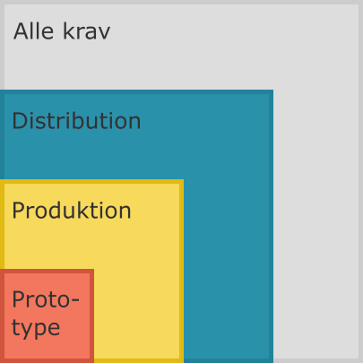

Programmel-overblik¶
Kontorets egenudviklede programmel bør følge fælles retningslinjer for bedste praksis i forhold til software-udvikling. Den overordnede vision for ethvert projekt bør være en tilstand, hvor programmel og dokumentation heraf er fremtidssikret. Når det er fremtidssikret, vil det eksempelvis til alle tider vil være muligt for nye personer på et givet projekt at komme nemt igang og fortsætte, hvor andre slap. Generelt set, vil der være strukturer på plads, som sikrer, at det pågældende programmel kan bruges i fremtiden uden adgang til andet end koden, dokumentation samt historik heraf.
God praksis kan og bør belyses fra flere synsvinkler. Der vil altid være tekniske krav, som eksempelvis kræver overvejelser om software-arkitektur, teknisk infrastruktur eller programmeringskonventioner. Fra den formelle synsvinkel har vi krav til, at et givet projekt er veldokumenteret, at kode og dokumentation har den rigtige licens, at de enkelte dele af projektet er tilgængelige for dem, der skal kunne tilgå dem.
Kategorierne har gradvis flere krav til til det udviklede programmel. Når et stykke programmel bliver placeret i en kategori, stiller vi samtidig specifikke krav til, hvad der skal indgå i projektet. Vi kan spørge os selv, hvor modent et projekts programmel er, ved at se på, hvor mange af kravene inden for kategorien, der er opfyldt.
Indplaceringen sætter altså et mål for, hvornår et projekts programmel er modent nok til fortsat udvikling eller færdigt. Når et projekts programmel opfylder alle kravene i kategorien, vil vi sige, at det er tilpas fremtidssikret i ovennævnte forstand.
Kategori-inddelingen forudsætter, at det pågældende programmel har et værdiskabende formål for forretningen. Det er med andre ord en antagelse, at det pågældende programmel bør eksistere.
Inddelingen er altså fastsat ud fra den nuværende, eksisterende programmel-portefølje, og kravene er valgt ud fra generel bedste praksis i resten af industrien. Kravene i hver kategori kan derfor ændre sig afhængigt af både vores egne behov, men også som en naturlig del af den teknologiske og styringsmæssige tendens, vi ser omkring os. Derfor er dette dokument nødvendigvis også en midlertidig rettesnor, som i sig selv skal fremtidssikres efter bedste praksis.
Nedenfor kommer et kort overblik over de enkelte kategorier med links til skabeloner. Dette efterfølges af et afsnit for hver skabelons, hvor de enkelte krav til leverancen beskrives.
Kategorier¶
Inddelingen i kategorier er til for at skabe en klar ramme for forventningerne til et givet projekts leverance. Kategorierne har forskellige krav afhængig af deres kritikalitet og formål for forretningen.
De enkelte kategorier dækker følgende krav:
| Krav | Prototype | Produktion | Distribution |
|---|---|---|---|
| README-fil | x | x | x |
| Licens | x | x | x |
.gitignore |
x | x | x |
| Git-arkiv på GitHub | x | x | x |
| Brugervejledning | x | x | x |
| Installationsvejledning | x | x | x |
| Konfigurationsfiler | x | x | x |
| Teknisk dokumentation | x | x | |
| Test suite | x | x | |
| Continuous Integration [CI] | x | x | |
| Semantisk versionering | x | x | |
| Vedligeholdelsesspor | x | x | |
| API-dokumentation | x | ||
| Systemafhængigheder | x | ||
| Continuous Delivery/Deployment [CD] | x |
Ud fra tabellen kan man se, at kravene til et projekts programmel bliver flere med hver kategori. Kravene i kategorien Prototype er indeholdt i den efterfølgende kategori Produktion og denne kategoris krav er igen inkluderet i den sidste kategori Distribution.
Derfor vil en opfyldelse af alle krav i kategorien Produktion medføre, at man opfylder alle krav stillet til programmel i kategorien Prototype. På samme måde vil en imødekommelse af alle krav til programmel i kategorien Distribution samtidig betyde, at man opfylder alle krav i de to underliggende kategorier Produktion og Prototype.
Ovenstående er illustreret i følgende figur, der samtidig viser, at der er en ubegrænset mængde krav uden for de tre inddelinger, vi har valgt til vores formål lige nu.

Modtagere¶
Fælles for alle arkiverne er, at der overordnet er mindst to modtagere af leverancen: udviklere (herunder de oprindelige forfattere), og brugere (kollegaen, den interne partner, 'kunden'). Modtagerne adskiller sig primært ved deres forskellige formål med at tilgå arkivets indhold, og i forlængelse heraf som regel også i deres evner til at forstå, hvordan arkivet skal bruges. (Domænespecialister hører dog ofte til i begge modtager-grupper.)
Brugeren skal bruge produktet, som arkivet indeholder eller leverer. For brugeren er arkivet ofte adgangen til at komme i besiddelse af produktet, installere det og bruge det. Vejledninger og programmel-pakker er derfor noget, brugeren vil kigge efter, når de tilgår arkivet. De er der først og fremmest for at kunne løse deres egne opgaver i forretningen bedre. For dem er programmellet bare en ekstra kommando eller grafisk brugergrænseflade, som helst skal være let at anvende.
Udvikleren skal kende til forretningen og brugerens behov og har til formål at bringe sit kendskab til værktøjer og software-principper sammen med de muligheder og begrænsninger, som findes i den eksisterende IT-infrastruktur i forretningen, sammen for at opfylde disse behov.
Fremtidssikrende slutprodukter¶
Slutprodukterne i arkivet har altså forskellige formål, som gør dem relevante på forskellige tidspunkter til forskellige modtagergrupper.
De værktøjer, man bruger til at bygge og videreudvikle koden, skal helst være de samme. Git-arkivet har derfor filer, der er relevante for én, der skal tilføje funktionalitet. Alt hvad der skal til for at kunne bygge (videre på) eller vedligeholde projektet er udviklervendte.
Bruger-modtagergruppen er derimod alt fra hovedmodtageren---dén, der bestilte leverancen---eller andre udviklere, der skal bruge programmellets funktionalitet i deres egne projekter, enten via programmelets API eller som applikation, hvis dette er formålet med programmellet.
Der kan være mange formål med programmellet ud over de nævnte, men med kravene inden for disse kategorier, er det primære formål at vi har materiale i et arkiv, som gør det muligt at levere det forventede, uden kendskab til andet end indholdet i arkivet. Alt, hvad der opfylder dette formål vil generelt være et rimeligt fremtidssikret projekt.
Kravenes gyldighed fra begyndelse til slutprodukt¶
Det er i orden, at ikke alt er med fra starten, men det skal være tilfældet, at man kan komme videre og bidrage til projektet fra dét stadium, det er i til et givet tidspunkt.
Det er ikke formålet her at fortælle, hvad der skal laves i hvilken rækkefølge. Det vil altid være kontekstafhængigt. Men hvor rækkefølgen til dels er ligemeget, så skal der som minimum være noget, man kan starte ud fra, som bruger eller udvikler, når man tilgår arkivet.